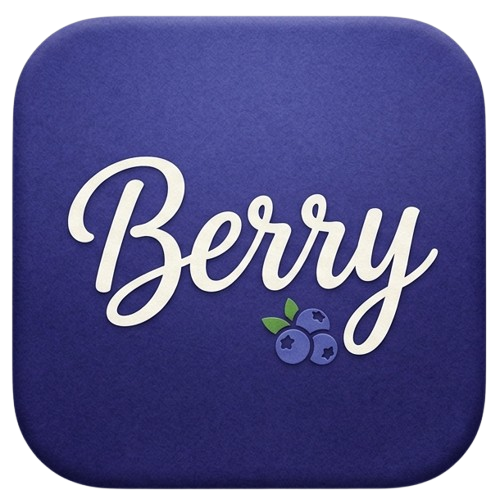

Beryy settings
Connect NVIDIA NIM, Google AI Studio, Groq, OpenRouter, local Ollama, or an OpenAI-compatible endpoint. Everything stays in this Chrome profile.
Beryy is an independent experiment. It is not affiliated with Anthropic or Claude. Use it only on sites and accounts you are allowed to automate.